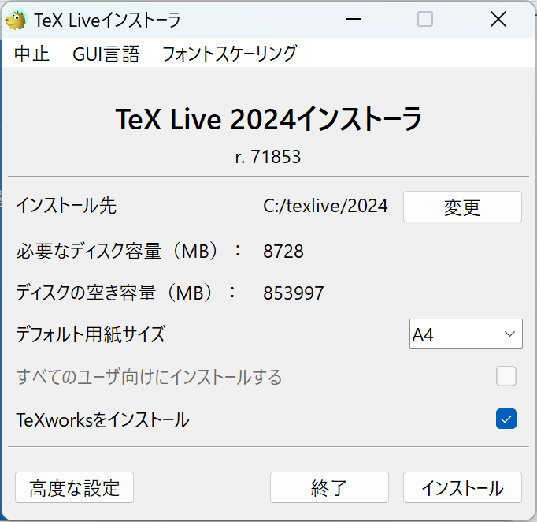

これぞ王道
LaTeX環境でまず思い浮かぶのがTeX Liveを用いたローカル環境です。
本記事では設定方法を解説します。
なかなかややこしいと思いますが、これできっとローカルでもTeXファイルをコンパイル（PDF化）できるはずです！
現段階ではWindowsに対応した記事になっています。Mac版は今後更新します。
基本的な内容は以下のページを参考にしています。
簡潔に、かつ自分が設定して困った点を追記しています。
また、VSCodeはインストールしてある前提で進めます。
インストーラーをダウンロード
以下のリンクよりインストーラーをダウンロードします。
Windows：https://www.tug.org/texlive/acquire-netinstall.html
開いたら最初に出てくるリンクのinstall-tl-windows.exeをクリックしてダウンロードします。
ダウンロードできたら開いてください。
インストールする
開くと以下のようなメッセージが出るかもしれません。
その場合、詳細情報＞実行で進むことができます。進めて問題ありません。
- Installが選択された状態でNext>
- Installを選択
数秒待つと新たなウィンドウが登場し、さらに待機すると以下の画面が出てくると思います。

ここで、一番下の「TeXworksをインストール」はとりあえず要らないので、チェックを外してください。
さらに、左下の「高度な設定」に進みます。
ここでやることは2つです。
「スキーム」を変更し、「basicスキーム（plainおよびlatex）」を選択します。
その下の「追加コレクションの数」をカスタマイズし、言語で日本語と英語・米語を追加、さらに右列にある「LaTeX推奨パッケージ」を追加します。
OKを押して戻るとスキームがまたカスタムスキームに戻っていますが、問題ありません。
インストールを押してインストールしましょう。
めちゃくちゃ時間がかかりますが、辛抱強く待ちましょう。不安になって中止とか押さないように！
インストール画面のInstalling [001/399, ...]を見てもらえればわかると思いますが、約400個のパッケージをインストールしています。時間がかかるわけですね…。
以下の画面になれば終わりなので、閉じるを押してください。
TeX Live Managerを開く
アプリ一覧からTeX Live Managerを開いてください。
開いたら、「パッケージリスト」の中にある「未インストール」を選択します。選択すると別ウィンドウが出てきますので、読み込みが完了するまで待機し、完了したら閉じてください。
検索窓でlatexmkを入力します。
すると下に2つ候補が出てくるので、左側の丸をクリックして両方ともにチェックを入れます。
ウィンドウの真ん中右に「選択項目をインストール」があると思うので、チェックしたのちクリックしてください。
Sumatra PDFのダウンロード（任意）
推奨する方：既定のPDFビュワーがAdobeの方
TeXファイルを一度コンパイルするとPDFビュワーで開くことになるのですが、AdobeではPDFを開いたまま再度コンパイルをすることができません。一度コンパイルた後に修正したい場合、PDFファイルを一度閉じて再度コンパイルする必要があります。
この面倒さを回避するためには、Sumatra PDFのようなPDFビュワーをしようするのがよいです。このビュワーではPDFファイルを開いたまま追加のコンパイルをすることができます。
以下のリンクからダウンロードページに行ってください。
https://www.sumatrapdfreader.org/download-free-pdf-viewer
自分の環境にあった（おそらくほとんどの人にとって一番上の）.exeファイルをダウンロードします。
ダウンロードしたファイルを開くとカラフルなウィンドウが開きますので、インストールしてください。とりあえずこれでOKです。
既定にするかどうかはお任せします（僕はしてないです笑）。
諸々の設定
.latexmkrc
エクスプローラーで拡張子（.pdfや.docsなど）が非表示になっている場合、表示する設定にしてください。エクスプローラー上部にある「表示」からさらに1番下の「表示」に進むと、「ファイル名拡張子」という項目があります。この項目にチェックを入れてください。
次に、エクスプローラーを開いてください。
開いたら左にあるバーの下部からPC>Windows (C:)と進み、さらにユーザー>[自分のユーザー名]と進みます1。
左上の「新規作成」からテキストドキュメントを作成し、ファイル名は.txtもすべて消したうえで.latexmkrc.としてエンターを押します。最初と最後に.があるのを確認してください。
作成の際には最初と最後にドットを入れますが、作成されたファイルでは最後のドットは消えています。
作成できたら開きます。何で開くか聞かれると思いますが、（何で開いてもよいのですが）VSCodeでよいと思います。
開いたら以下の内容をコピペして保存し、閉じてください。
.latexmkrc
# 通常の LaTeX ドキュメントのビルドコマンド
$latex = 'uplatex %O -kanji=utf8 -no-guess-input-enc -synctex=1 -interaction=nonstopmode %S';
# pdfLaTeX のビルドコマンド
$pdflatex = 'pdflatex %O -synctex=1 -interaction=nonstopmode %S';
# LuaLaTeX のビルドコマンド
$lualatex = 'lualatex %O -synctex=1 -interaction=nonstopmode %S';
# XeLaTeX のビルドコマンド
$xelatex = 'xelatex %O -no-pdf -synctex=1 -shell-escape -interaction=nonstopmode %S';
# Biber, BibTeX のビルドコマンド
$biber = 'biber %O --bblencoding=utf8 -u -U --output_safechars %B';
$bibtex = 'upbibtex %O %B';
# makeindex のビルドコマンド
$makeindex = 'upmendex %O -o %D %S';
# dvipdf のビルドコマンド
$dvipdf = 'dvipdfmx %O -o %D %S';
# dvipd のビルドコマンド
$dvips = 'dvips %O -z -f %S | convbkmk -u > %D';
$ps2pdf = 'ps2pdf.exe %O %S %D';
# PDF の作成方法を指定するオプション
## $pdf_mode = 0; PDF を作成しない。
## $pdf_mode = 1; $pdflatex を利用して PDF を作成。
## $pdf_mode = 2; $ps2pdf を利用して .ps ファイルから PDF を作成。
## pdf_mode = 3; $dvipdf を利用して .dvi ファイルから PDF を作成。
## $pdf_mode = 4; $lualatex を利用して .dvi ファイルから PDF を作成。
## $pdf_mode = 5; xdvipdfmx を利用して .xdv ファイルから PDF を作成。
$pdf_mode = 4;
# PDF viewer の設定
$pdf_previewer = "start %S"; # "start %S": .pdf に関連付けられた既存のソフトウェアで表示する。ここでは$pdf_previewer = "start %S"となっていますが、これは既定のPDFビュワーで開くという設定です。
次に、先ほどインストールしたSumatra PDFで開く設定方法です。
.latexmkec（Sumatra PDF ver.）
以下の設定をする場合は隠しファイルを表示する設定にする必要があります。先ほどの拡張子を表示する設定の下に「隠しファイル」という項目がありますので、そこにチェックを入れてください2。
内容は上のとほとんど同じです。Sumatra PDFで開くために、次のことを確認してください。
- エクスプローラーを開く
- 先ほど
.latexmkrcファイルを作成したディレクトリの上の方にAppDataがあるのでダブルクリック Local>SumatraPDFと進むSumatraPDF.exeを右クリックし、パスのコピーを選択- 一番最後のイコールの後にペースト
# 通常の LaTeX ドキュメントのビルドコマンド
$latex = 'uplatex %O -kanji=utf8 -no-guess-input-enc -synctex=1 -interaction=nonstopmode %S';
# pdfLaTeX のビルドコマンド
$pdflatex = 'pdflatex %O -synctex=1 -interaction=nonstopmode %S';
# LuaLaTeX のビルドコマンド
$lualatex = 'lualatex %O -synctex=1 -interaction=nonstopmode %S';
# XeLaTeX のビルドコマンド
$xelatex = 'xelatex %O -no-pdf -synctex=1 -shell-escape -interaction=nonstopmode %S';
# Biber, BibTeX のビルドコマンド
$biber = 'biber %O --bblencoding=utf8 -u -U --output_safechars %B';
$bibtex = 'upbibtex %O %B';
# makeindex のビルドコマンド
$makeindex = 'upmendex %O -o %D %S';
# dvipdf のビルドコマンド
$dvipdf = 'dvipdfmx %O -o %D %S';
# dvipd のビルドコマンド
$dvips = 'dvips %O -z -f %S | convbkmk -u > %D';
$ps2pdf = 'ps2pdf.exe %O %S %D';
# PDF の作成方法を指定するオプション
## $pdf_mode = 0; PDF を作成しない。
## $pdf_mode = 1; $pdflatex を利用して PDF を作成。
## $pdf_mode = 2; $ps2pdf を利用して .ps ファイルから PDF を作成。
## pdf_mode = 3; $dvipdf を利用して .dvi ファイルから PDF を作成。
## $pdf_mode = 4; $lualatex を利用して .dvi ファイルから PDF を作成。
## $pdf_mode = 5; xdvipdfmx を利用して .xdv ファイルから PDF を作成。
$pdf_mode = 4;
# PDF viewer の設定
$pdf_previewer = 次のようになるはずです。
$pdf_previewer = "C:\Users\ユーザー名\AppData\Local\SumatraPDF\SumatraPDF.exe"しかしこれで終わりではありません。最後に、パス内のバックスラッシュを二重にする必要があります！
最終的には次のようになります。
$pdf_previewer = "C:\\Users\\ユーザー名\\AppData\\Local\\SumatraPDF\\SumatraPDF.exe"このコードをコピペしてユーザー名のところを自分のものに変えれば解決な気もしますね…笑
これでPDF出力の際にSumatra PDFで開かれるようになり、コンパイルのストレスが軽減されます。
VSCodeでコンパイル
まず、VSCodeを既に開いている場合、一度閉じて再度開いてください。TeX Liveの設定を反映させるためです。
設定
画面左の拡張機能アイコン を開き、検索窓に
を開き、検索窓にJames-Yu.latex-workshopを入力します。これがLaTeX用の拡張機能です。
インストールしたら、VSCodeを再起動して設定を反映させます。
ここからの設定は以下の手順です。
- 左下の「管理」（設定アイコン）から「設定」をクリック
- 右上の「設定を開く」
 をクリック
をクリック { }の中に以下の内容をペースト、保存3
settings.json
// 日本語文書で単語移動を使うため、助詞や読点、括弧を区切り文字として指定する
"editor.wordSeparators": "./\\()\"'-:,.;<>~!@#$%^&*|+=[]{}`~? 、。「」【】『』（）！？てにをはがのともへでや",
// 設定: LaTeX Workshop
// LaTeX Workshop ではビルド設定を「Tool」と「Recipe」という2つで考える
// Tool: 実行される1つのコマンド。コマンド (command) と引数 (args) で構成される
// Recipe: Tool の組み合わわせを定義する。Tool の組み合わせ (tools) で構成される。
// tools の中で利用される Tool は "latex-workshop.latex.tools" で定義されている必要がある。
// latex-workshop.latex.tools: Tool の定義
"latex-workshop.latex.tools": [
// latexmk を利用した lualatex によるビルドコマンド
{
"name": "Latexmk (LuaLaTeX)",
"command": "latexmk",
"args": [
"-f", "-gg", "-pv", "-lualatex", "-synctex=1", "-interaction=nonstopmode", "-file-line-error", "%DOC%"
]
},
// latexmk を利用した xelatex によるビルドコマンド
{
"name": "Latexmk (XeLaTeX)",
"command": "latexmk",
"args": [
"-f", "-gg", "-pv", "-xelatex", "-synctex=1", "-interaction=nonstopmode", "-file-line-error", "%DOC%"
]
},
// latexmk を利用した uplatex によるビルドコマンド
{
"name": "Latexmk (upLaTeX)",
"command": "latexmk",
"args": [
"-f", "-gg", "-pv", "-synctex=1", "-interaction=nonstopmode", "-file-line-error", "%DOC%"
]
},
// latexmk を利用した platex によるビルドコマンド
// 古い LaTeX のテンプレートを使いまわしている (ドキュメントクラスが jreport や jsreport ) 場合のため
{
"name": "Latexmk (pLaTeX)",
"command": "latexmk",
"args": [
"-f", "-gg", "-pv", "-latex='platex'", "-latexoption='-kanji=utf8 -no-guess-input-env'", "-synctex=1", "-interaction=nonstopmode", "-file-line-error", "%DOC%"
]
}
],
// latex-workshop.latex.recipes: Recipe の定義
"latex-workshop.latex.recipes": [
// LuaLaTeX で書かれた文書のビルドレシピ
{
"name": "LuaLaTeX",
"tools": [
"Latexmk (LuaLaTeX)"
]
},
// XeLaTeX で書かれた文書のビルドレシピ
{
"name": "XeLaTeX",
"tools": [
"Latexmk (XeLaTeX)"
]
},
// LaTeX(upLaTeX) で書かれた文書のビルドレシピ
{
"name": "upLaTeX",
"tools": [
"Latexmk (upLaTeX)"
]
},
// LaTeX(pLaTeX) で書かれた文書のビルドレシピ
{
"name": "pLaTeX",
"tools": [
"Latexmk (pLaTeX)"
]
},
],
// latex-workshop.latex.magic.args: マジックコメント付きの LaTeX ドキュメントをビルドする設定
// '%!TEX' で始まる行はマジックコメントと呼ばれ、LaTeX のビルド時にビルドプログラムに解釈され、
// プログラムの挙動を制御する事ができる。
// 参考リンク: https://blog.miz-ar.info/2016/11/magic-comments-in-tex/
"latex-workshop.latex.magic.args": [
"-f", "-gg", "-pv", "-synctex=1", "-interaction=nonstopmode", "-file-line-error", "%DOC%"
],
// latex-workshop.latex.clean.fileTypes: クリーンアップ時に削除されるファイルの拡張子
// LaTeX 文書はビルド時に一時ファイルとしていくつかのファイルを生成するが、最終的に必要となるのは
// PDF ファイルのみである場合などが多い。また、LaTeX のビルド時に失敗した場合、失敗時に生成された
// 一時ファイルの影響で、修正後のビルドに失敗してしまう事がよくある。そのため、一時的なファイルを
// 削除する機能 (クリーンアップ) が LaTeX Workshop には備わっている。
"latex-workshop.latex.clean.fileTypes": [
"*.aux", "*.bbl", "*.blg", "*.idx", "*.ind", "*.lof", "*.lot", "*.out", "*.toc", "*.acn", "*.acr", "*.alg", "*.glg", "*.glo", "*.gls", "*.ist", "*.fls", "*.log", "*.fdb_latexmk", "*.synctex.gz",
// for Beamer files
"_minted*", "*.nav", "*.snm", "*.vrb",
],
// latex-workshop.latex.autoClean.run: ビルド失敗時に一時ファイルのクリーンアップを行うかどうか
// 上記説明にもあったように、ビルド失敗時に生成された一時ファイルが悪影響を及ぼす事があるため、自動で
// クリーンアップがかかるようにしておく。
"latex-workshop.latex.autoClean.run": "onBuilt",
// latex-workshop.view.pdf.viewer: PDF ビューアの開き方
// VSCode 自体には PDF ファイルを閲覧する機能が備わっていないが、
// LaTeX Workshop にはその機能が備わっている。
// "tab" オプションを指定すると、今開いているエディタを左右に分割し、右側に生成されたPDFを表示するようにしてくれる
// この PDF ビュアーは LaTeX のビルドによって更新されると同期して内容を更新してくれる。
"latex-workshop.view.pdf.viewer": "tab",
// latex-workshop.latex.autoBuild.run: .tex ファイルの保存時に自動的にビルドを行うかどうか
// LaTeX ファイルは .tex ファイルを変更後にビルドしないと、PDF ファイル上に変更結果が反映されないため、
// .tex ファイルの保存と同時に自動的にビルドを実行する設定があるが、文書が大きくなるに連れてビルドにも
// 時間がかかってしまい、ビルドプログラムの負荷がエディタに影響するため、無効化しておく。
"latex-workshop.latex.autoBuild.run": "never",
"[tex]": {
// スニペット補完中にも補完を使えるようにする
"editor.suggest.snippetsPreventQuickSuggestions": false,
// インデント幅を2にする
"editor.tabSize": 2
},
"[latex]": {
// スニペット補完中にも補完を使えるようにする
"editor.suggest.snippetsPreventQuickSuggestions": false,
// インデント幅を2にする
"editor.tabSize": 2
},
"[bibtex]": {
// インデント幅を2にする
"editor.tabSize": 2
},
// ---------- LaTeX Workshop ----------
// 使用パッケージのコマンドや環境の補完を有効にする
"latex-workshop.intellisense.package.enabled": true,いよいよコンパイル
エクスプローラー上で好きな場所にフォルダーを作っておきます。
お試しなのでtestとかでよいと思います。
VSCode上でウィンドウ左上の「ファイル」から「フォルダーを開く」をクリック、今作成したフォルダをクリックし、「選択」をクリックします。
左上のTESTの右にある「ファイルを作成」をクリックし、test.texのような.texファイルを作成します。
作成できたら、以下のようなサンプルコードを書いてみます。
\documentclass{ltjsarticle}
\title{日本語のLaTeX入門}
\author{あなたの名前}
\date{\today}
\begin{document}
\maketitle
\section{はじめに}
LaTeXは、高品質な文書を作成するための強力なツールです。日本語でも簡単に利用することができます。
\section{基本的な書き方}
LaTeXでは、文章をセクションやパラグラフに分けることができます。また、数式や図表の挿入も簡単に行えます。
\section{結論}
LaTeXを使えば、美しい日本語の文書を作成することができます。ぜひ活用してみてください。
\end{document}ファイルをCtrl + Sで保存したら、右上の緑の▷、ビルドボタンをクリックしてコンパイルしましょう！
すると以下のようなSumatra PDFのウィンドウが出てくるのではないでしょうか。
いい感じですね。そしたらSumatra PDFの魅力を感じるために、適当に内容を変え、再度コンパイルしてみてください。
Sumatra PDFを一度閉じなくても、修正されたPDFが出てくるのではないでしょうか。Adobeではこれができません。
先ほど別にいっかーと思ってインストールしてなかった方、してみてはいかがでしょうか笑
エラー：パッケージ不足
いつかパッケージが足りなくてコンパイルできなくなることがあるかもしれません。
次のようなエラーが出てきた場合、「Open compiler log」をクリックします。
ログを少し上に遡ると、例えば次のような文言が目に入ります。
! LaTeX Error: File `type1cm.sty' not found.これはtype1cmパッケージが足りていないことを指しています。
そしたら最初の方で開いたTeX Live Managerを開き、latexmkの時と同様に未インストールを選択したうえで検索窓にtype1cmと入力します。
出てきた項目にチェックを入れ、「選択項目をインストール」をクリックしてインストールしてください。
これでパッケージを補い、コンパイルできるはずです。まだ足りなかったら、同様の方法でインストールすることで対処できます。
最後に
これで基本的なLaTeX環境の構築ができました。
冒頭に紹介したサイトにかなり頼る形にはなりましたが、自分が詰まったところは改善して追記してあります。
不明点があれば元サイトを参照していただくか、コメントをお願いします。